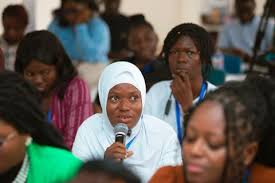
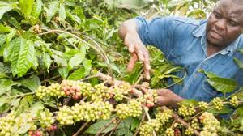
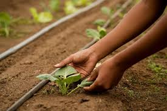
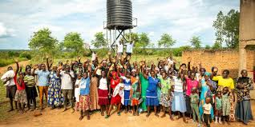
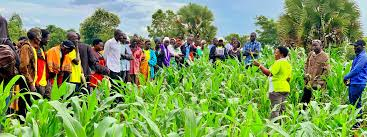
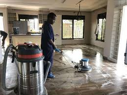

The Seed
We began when a small group of young people decided that hope was not enough — they wanted skills, opportunity and a way to give back. From a single workshop to community-led initiatives, our work has grown into a movement led by youth who refuse to wait for change.
Our Mission — Planting Hope, Growing Futures
We equip young people with the skills, networks and confidence to build resilient livelihoods and lead community change.



Background
The Africa Youth Hope Alive Project has been passionately serving communities for the past four years. The inspiration for this initiative grew out of a deep commitment to community empowerment, sparked when our founder joined the Rotary Club, an organization dedicated to making a positive impact through outreach to those in need.
Coming from a community where approximately 70% of young people lack practical skills and opportunities, it became clear that many youth were disengaged from productive work and often resorted to lamenting their circumstances. This realization fueled the desire to create innovative programs that equip young people with the skills they need to thrive and contribute meaningfully to their communities.
Since its inception, the project has reached over 1,000 communities, delivering impactful programs that empower youth, especially focusing on mentorship, digital skills training for girls, environmental initiatives like tree planting, and promoting sustainable agricultural practices. Through these efforts, Africa Youth Hope Alive is actively transforming lives and fostering hope for a brighter, sustainable future across the continent.


What We Are
We are a community-rooted non-profit that builds practical skills, fosters leadership and connects youth to opportunities. Our work blends hands-on training, mentorship and community projects to create sustainable pathways.
- Practical training & labs
- Cohort-based mentorship
- Community-led environmental action
- Market-ready skills and enterprise support

Who We Are
We are local youth, mentors, community leaders, technologists and partner organisations working together:
- Youth participants — learners and changemakers
- Volunteer mentors — industry and community experts
- Local partners — grassroots organisations and schools
- Donors & supporters — enabling programs and scaling impact
Core Values
Team & Partners
Ana M.
Programs Lead
Samuel O.
Tech & Partnerships
Fatima D.
Community Engagement
Local Partner
Implementation Partner